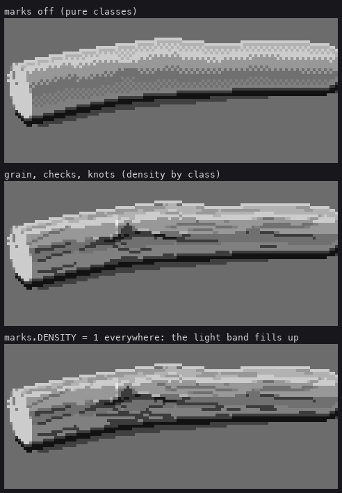
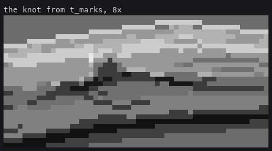
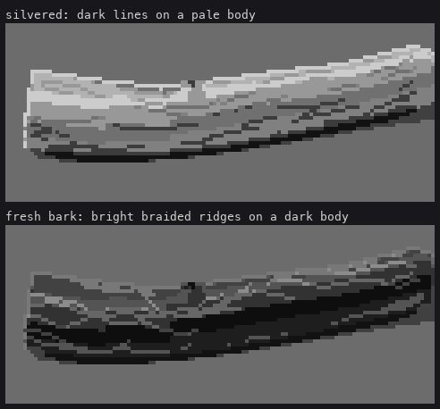

6. Grain, checks and knots
Trigger: any log at least 7 px across (grain), 4 px (checks), 9 px (knots).
What the photographs show:
- Grain: silvered driftwood is smooth and pale, and its grain is long, gently waving dark lines along the axis, broken into dashes a few pixels apart. They swell round knots, converge where the wood narrows, and bunch toward the silhouette because the cylinder turns away.
- Checks: a few long splits along the grain, the darkest lines on the log, often with a lit upper lip.
- Knots: the most identifying feature of all. A dark eye, the outline bulging over it, and grain flowing round it.

Marks are curves on the surface, drawn as clean runs
Every mark is a curve θ(s) on the 3-D log: s along the axis, θ round it. It is sampled at half-pixel spacing, projected, hidden where the surface faces away or something is in front, and then redrawn as clean runs.
# code/marks.py
def surf_point(lg, s, th, r_scale=1.0):
p, ax, r, (e1, e2) = lg.frame_at(s)
n = np.cos(th) * e2 + np.sin(th) * e1
return p + n * r * r_scale, n
def _curve(lg, s0, s1, th0, wob_amp, wob_len, ph, step_m, knots=()):
s = np.arange(s0, s1, step_m)
th = th0 + wob_amp * np.sin(2 * np.pi * s / wob_len + ph) + 0.5 * wob_amp * np.sin(2 * np.pi * s / (wob_len * 0.37) + 2 * ph)
# knots push grain around them: a smooth bump in theta, away from the knot centre
for (ks, kth, kr_s, kr_th) in knots:
dth = np.angle(np.exp(1j * (th - kth)))
ds = (s - ks) / (kr_s * 3.0)
w = np.exp(-ds * ds) * np.exp(-(dth / (kr_th * 3.0)) ** 2)
th = th + np.sign(dth + 1e-6) * w * kr_th * 2.2
return s, th
def _snap_runs(xi, yi, own, seg=5):
"""re-draw a projected dash as clean runs: vertices every ~seg px along it, each span a
constant-run line (1:1, 2:1, 3:1, 4:1, flat) -- no zigzag diagonals."""
...
for a, b in zip(idx[:-1], idx[1:]):
lx, ly = clean_line(xi[a], yi[a], xi[b], yi[b])
Why each piece is there:
- On the surface, not in screen space. The grain wraps the cylinder, so it bunches at the silhouette and follows every bend and taper for free, which a screen-space texture never would.
- Hidden where it should be.
_visiblechecks that the surface faces the camera and that the traced depth at that pixel is this point's depth. - Snapped. Without
_snap_runs, grain on a diagonal log was zigzag litter: every projected dash was a different jittery staircase. A narrow form must be a clean run. That rule came from the grass students, and it holds for cracks exactly as for blades.
Once there are marks, the form turns by density
This is the one principle in this lesson I'd underline. My first grain went on top of the checkered classes:

Two textures at one scale, the class checker and the grain, fought each other into dotted-line noise. The fix: for logs at least 7 px across, the classes are quantized pure, with no checker, and the chance that a grain dash is drawn depends on the class it sits on.
# code/render.py, render(): pure classes when marks are on
if o.get('marks', True):
v = tech.sharpen(v, diam, max_gain=12.0)
...
pure = tech.CLASS_STEPS[np.clip(np.round(v), 0, 4).astype(int)]
st = np.where(diam >= 7, pure, st)
# code/marks.py: the density of dashes turns the form
DENSITY = np.array([0.2, 0.5, 0.85, 0.7, 0.95, 0.75, 0.5, 0.4]) # by the step under the dash
keep = rng.random() < DENSITY[base[yi[len(yi) // 2], xi[len(xi) // 2]]]
Dashes are densest in the halftone (0.95) and core (0.85), and sparse in the light (0.5). The lit band stays clean, as it does on Ferrari's grey trunk, so the light reads as light, and the turn into shadow is carried by marks thickening. It is the same idea as the grass students' "density of light marks carries the turn", inverted for dark marks.

figs.py marksfig. The bottom panel sets marks.DENSITY[:] = 1: the light band fills with grain and the log loses its top.
Each dash is one value step darker than the class under it (DARKER), and its first and last pixels are only a half step (TIP), so dashes taper into the tone rather than stopping square:
DARKER = np.array([0, 0, 1, 1, 2, 4, 4, 6])
TIP = np.array([0, 1, 2, 3, 3, 5, 5, 6]) # a half step: the tapering end of a grain dash
At 8× the tips still read as block ends. That is on the critic's not-ready list.
Checks: they wander, open, and stop
# code/marks.py (trimmed)
ss, th = _curve(lg, s0, s0 + ln, th0, rng.uniform(0.1, 0.18), 2 * lg.rad.mean() * rng.uniform(1.5, 4), ...)
...
deep = (f > 0.12) & (f < 0.88)
cv.step[yi[deep], xi[deep]] = DARKER2[base[yi[deep], xi[deep]]] # two steps down in the middle
cv.step[yi[~deep], xi[~deep]] = DARKER[base[yi[~deep], xi[~deep]]] # one step at the ends
wide = (f > 0.35) & (f < 0.65) & (dpx >= 10)
... # opens to 2 px on the anti-sun side
okl = own[ly2, lx2] & (base[ly2, lx2] >= 4) & ~chk[ly2, lx2]
cv.step[ly2[okl], lx2[okl]] = LIGHTER[base[ly2[okl], lx2[okl]]] # a lit lip on the sun side
A check runs 20–55% of the log's length, wanders, opens to 2 px in its middle third, closes at both ends, and catches a 1-px lit lip where the wood is lit. My first check was "a ruled staircase" (critic, round 4): full length, equal steps, one width. A later one, with too little wander, was "a Morse check", a row of evenly spaced dots (round 12). The wander (0.1–0.18 rad, at a wavelength of 1.5–4 diameters) is what makes it a run.
Knots are geometry
My first knots were marks only, 2×2 dark squares. The critic, round 5: "bullet holes". What says "knot" is the outline bulging and the grain streaming round it. So knots moved into the SDF:
# code/geo.py, Log.__init__: a small sphere set into the surface at each knot
for (ks, kth, kr_s, kr_th) in self.knots:
p0, ax, r0, (e1, e2) = self.frame_at(ks)
n = np.cos(kth) * e2 + np.sin(kth) * e1
self.knot_prims.append((p0 + n * r0 * 0.78, r0 * 0.36))
# Log.sdf: smooth-unioned in
for (c, rk) in self.knot_prims:
dk = np.linalg.norm(p - c, axis=-1) - rk
d = smin(d, dk, rk * 0.8)
The same knot list is passed to _curve, which bends every nearby grain line round it. The knot mark itself is drawn last: a dark eye (step 1) in a one-step-darker ring, with a lit lip on the swelling's sun side. It's the one mark allowed to touch the outline, because a knot bump is a real silhouette event.

Honestly, at 8× the grain's bowing is hard to see. What carries the knot here is the bump, the eye and the lit lip. At 4× (the middle panel of t_marks) it reads as a knot.
Every other mark leaves the outline alone:
edge = own & ~(np.roll(own, 1, 0) & np.roll(own, -1, 0) & np.roll(own, 1, 1) & np.roll(own, -1, 1))
...
cv.step[edge] = base_edge[edge] # restore the silhouette before drawing knots
Fresh bark is the inverse
Ferrari's snow-forest trunks are dark, with bright braided ridges and black voids between them. The same machinery does it with three changes:
- the body goes two steps down;
- lines are drawn three steps up;
- the lines wobble 0.25–0.45 rad at a wavelength of 4–8 radii, so they cross and braid.
if bark:
inner = own & ~edge
cv.step[inner] = np.maximum(cv.step[inner] - 2, 0) # the voids are the dark body itself
...
cv.step[yi, xi] = np.minimum(base[yi, xi] + 3, 7) # a bright ridge

Two failures first: a mid-grey body with slightly lighter streaks, which read as marble; then scattered black "void" pixels, which read as speckle. Contrast and voids are the language, and the voids are simply what lies between the ridges.